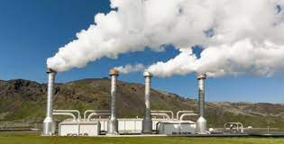

A energia geotérmica é proveniente do calor da terra, podendo ser gerada a menos de 64 quilômetros da superfície terrestre. O magma encontrado nesta camada rochosa que chega até 6000°C, pode ser encontrado através da perfuração do solo. Nesta mesma área rochosa você pode localizar o vapor proveniente da evaporação da água realizada pelo magma, que ao subir de forma rápida para superfície, é capaz de movimentar as turbinas com o fim de se obter a energia elétrica.
Desvantagens e vantagens ao usar a energia geotérmica:
Os aspectos positivos são: - A emissão de poluentes (CO2 e SO2) é praticamente nula, isso acaba não intensificando o efeito estufa. - A área para fazer as usinas são ligeiramente pequenas. Os aspectos negativos: - O calor perdido acaba aumentando a temperatura local, além de ser uma energia muito cara e pouco rentável. - Ocorre a emissão de poluentes que são extremamente corrosivos e nocivos à saúde. Curiosidades: A primeira usina de eletricidade baseada em energia geotérmica foi a de Larderello na Itália, construída em 1913, acionando um gerador de 250 Kw tendo sido posteriormente ampliada passando a gerar 400 MW elétricos. Se você quiser saber mais sobre este tipo de energia ou quer ir mais a fundo sobre este assunto, confira este vídeo que deixamos disponibilizados para você: